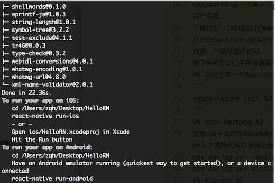
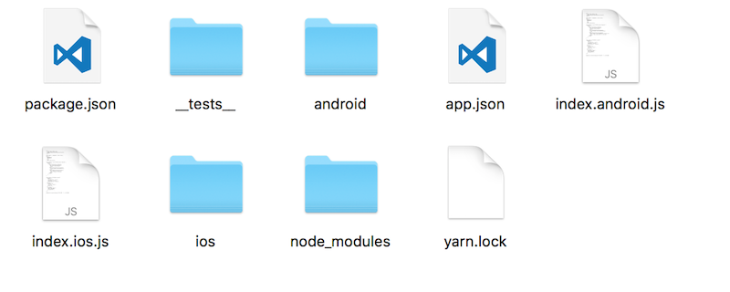
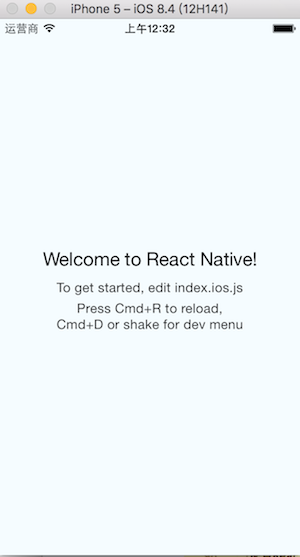
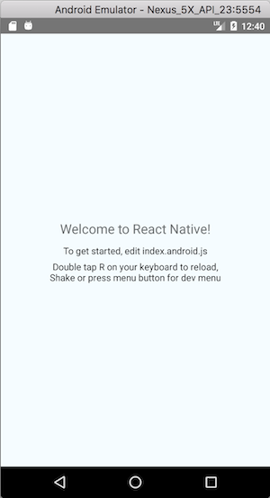

环境要求
- 安装Homebrew
Homebrew是OS X的套件(包)管理器，我们可以通过它获取并且安装很多组件
更新Homebrew（解决无法更新的最土办法，卸了重新安装）
ruby -e “$(curl -fsSL https://raw.githubusercontent.com/Homebrew/install/master/uninstall)"
ruby -e “$(curl -fsSL https://raw.githubusercontent.com/Homebrew/install/master/install)"
安装方式:
ruby -e “$(curl -fsSL https://raw.githubusercontent.com/Homebrew/install/master/install)" 安装npm和Node.js
Node.js最好安装4.0及其以上更高版本，node安装成功后npm自动也就有了，直接下载安装Node.js，网址：https://nodejs.org/en/download/
或者1
$ brew install node
定期软件更新保证最新
1
$ brew update && brew upgrade
其它相关安装
watchman
该插件用于监控bug文件和文件变化 ，并且可以触发指定的操作
watchman安装异常可能会导致一些问题，比如初始化卡住1
$ brew install watchman
flow
flow是一个 JavaScript 的静态类型检查器，建议安装它，以方便找出代码中可能存在的类型错误1
$ brew install flow
ReactNative安装
1 | $ npm install -g react-native-cli |
安装yarn
yarn是Facebook提供的替代npm的工具，可以加速node模块的下载。React Native的命令行工具用于执行创建、初始化、更新项目、运行打包服务（packager）等任务。1
$ npm install -g yarn
也可以两个一起安装1
$ npm install -g yarn react-native-cli
iOS开发环境需求
Xcode
Android开发环境需求
JDK: http://www.oracle.com/technetwork/java/javase/downloads/jdk8-downloads-2133151.html
Android studio: http://www.android-studio.org
安装Genymotion
Genymotion是一个第三方模拟器，它比Google官方的模拟器更易设置且性能更好。但是，它只针对个人用户免费。
下载地址：https://www.genymotion.com/
打开Genymotion,如果你尚未安装VirtualBox,它有可能会提示你安装
创建一个模拟器并启动
按下⌘+M可以打开开发者菜单(在安装并启动了React Native应用之后)
初始化第一个ReactNative应用
1 | react-native init 项目名称 |
1 | $ react-native init MyApp --version 0.44.3 #指定版本初始化 |
初始化成功如下图

注意:由于众所周知的网络原因，需要等待一段时间（具体视网络情况而定）。react-native命令行从npm官方源拖代码时会遇上麻烦，可以将npm仓库源替换为国内镜像：
npm config set registry https://registry.npm.taobao.org
npm config set disturl https://npm.taobao.org/dist
目录结构分析
a）默认生成android和ios两个平台的原生项目；
b）其中，index.android.js和index.ios.js文件为Android和iOS的空壳应用文件；
c）此外，node_modules文件夹，是为Node.js存放和管理npm包资源，也包含React Native框架文件。

运行项目
用Xcode打开ios目录下面的工程项目，并运行，运行结果如下图

用Android Studio打开android文件夹下的app并运行，运行结果如下图

调试
⌘+D 调出iOS调试菜单
⌘+M 调出Android调试菜单
转载请注明出处
文章有问题请指出